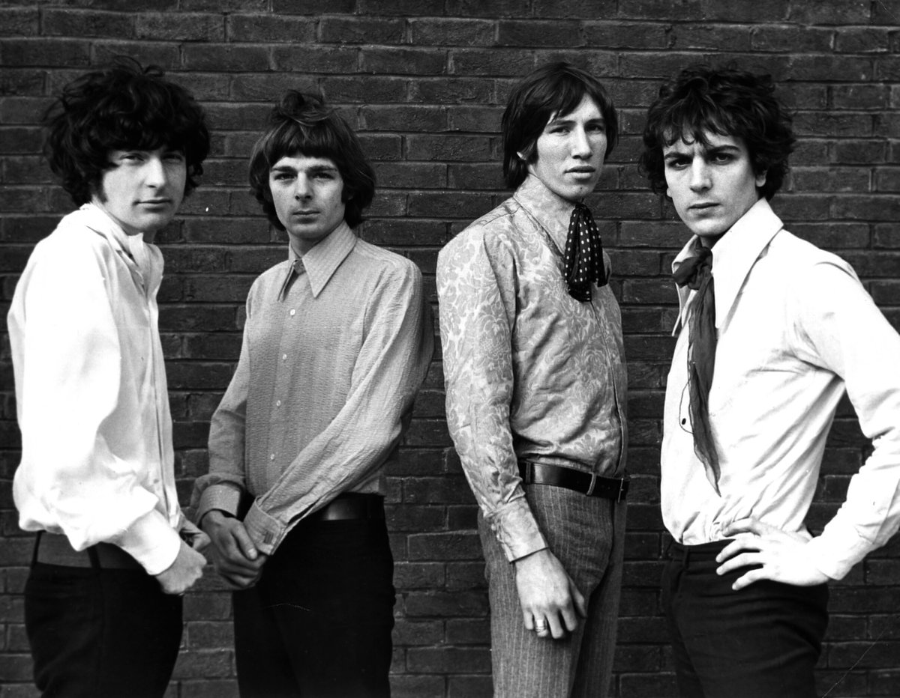

Astronomy Domine by Pink Floyd opens the band's 1967 debut album, The Piper at the Gates of Dawn.
Syd Barrett wrote it as a roll call of planets and moons, and it became the band's first space rock song.

Table of Contents
- What Is the Song About?
- How Was It Recorded?
- Where Does It Sit on the Album?
- Did the Band Keep Playing It?
- FAQ
What Is the Song About?
A Roll Call of the Heavens
The lyrics list planets and some of their moons.
Fan-club research says Barrett drew on a small Times astronomical atlas that he often carried.
The same account links the mood to Dan Dare, the space hero of the British comic The Eagle.
Sources offer several readings, and none is settled.
What Does the Title Mean?
"Domine" is the Latin vocative of "Dominus," meaning "O Lord."
It turns up often in Gregorian chant.
One popular reading plays on the word "domineer," so that the title means ruling over space.
That is a fan interpretation, not a statement from the band.
How Was It Recorded?
April 1967 at EMI
Pink Floyd cut the song in April 1967 while making its first album.
Sources give different session dates inside the month, so this page keeps to April.
The album was made at EMI's Abbey Road studios between February and May 1967.
Norman Smith produced it.
The Voice at the Start
The track opens with a spoken voice.
One fan site says it belongs to the band's manager Peter Jenner, though not every commenter agrees.
He reportedly spoke through a megaphone while reading from an astronomy atlas.
Two overdubbed takes make up the effect, the same account says.
For the song's background, see Wikipedia's entry on the track.
Where Does It Sit on the Album?
"Astronomy Domine" is the first track on The Piper at the Gates of Dawn.
EMI Columbia issued the album in August 1967, and Tower Records released it in the US on October 21, 1967.
It reached No. 6 on the UK albums chart, according to the Official Charts Company.
The UK release carried no singles, so the song never had a chart run of its own.
Barrett wrote or co-wrote every track on the album but one.
Wikipedia calls it the album's only overt space rock song.
The two 1967 singles, "Arnold Layne" and "See Emily Play," stayed off the record.
Our 1967 music year guide shows where the album landed that year.
Did the Band Keep Playing It?
From Barrett to Gilmour
The song stayed in the live set long after Barrett left in 1968.
The 1969 double album Ummagumma includes a live version.
The last confirmed performance with Roger Waters took place in Rome in June 1971.
David Gilmour later played it on solo tours, including 2006 and 2015 to 2016.
| Appearance | Date |
|---|---|
| Studio version on The Piper at the Gates of Dawn | August 1967 |
| Live version on Ummagumma | November 1969 |
| Last confirmed show with Roger Waters, Rome | June 1971 |
| David Gilmour solo tours | 2006, 2015 to 2016 |
Why Astronomy Domine by Pink Floyd Matters
The song is an early example of space rock inside British psychedelic rock.
Our Pink Floyd biography tells what happened to the band after that debut.
The Rock and Roll Hall of Fame inducted the group in 1996, as the Rock Hall's inductee page records.
FAQ
Who wrote Astronomy Domine?
Syd Barrett wrote it.
It opens Pink Floyd's debut album, The Piper at the Gates of Dawn.
What does Astronomy Domine mean?
"Domine" is the Latin vocative of "Dominus," meaning "O Lord," a word common in Gregorian chant.
The lyrics name planets and moons, and no single explanation of the title is settled.
Who is the voice at the start of Astronomy Domine?
One fan site says it is the band's manager Peter Jenner, speaking through a megaphone and reading from an astronomy atlas.
Not every commenter agrees.
Was Astronomy Domine a single?
No.
The Piper at the Gates of Dawn produced no UK singles, and the album reached No. 6 on the UK chart.
Did Pink Floyd keep playing Astronomy Domine?
Yes.
The band played it live for years, with Roger Waters for the last confirmed time in June 1971 in Rome, and David Gilmour revived it on solo tours.
It remains the band's clearest early look at the stars.
Back to the 1960smusic.net homepage to explore every genre of the decade after hearing Astronomy Domine by Pink Floyd.